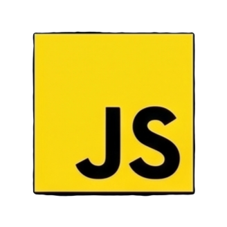

JavaScript began as a quick scripting language for Netscape Navigator, designed to make static web pages interactive. Three decades later it is the world's most-used programming language — running in browsers, on servers, in databases, mobile apps, and embedded devices. This page covers where it came from, how it actually works, the tools built around it, and where to learn it properly.

Almost nothing about JavaScript's origin story sounds like it should have worked — and yet the rushed decisions of one hectic month in 1995 shaped every website that has ever existed.
In early 1995, Netscape Communications realized the web was entirely static: every page was frozen HTML, with no way to respond to user input without a round-trip to the server. Netscape hired programmer Brendan Eich in April 1995 with a mandate to embed the Scheme programming language directly into the browser. That plan quickly changed — management wanted something that looked like Java to piggyback on Java's 1995 marketing hype. Eich delivered a working prototype of a completely new language in roughly ten days in May 1995. It was internally codenamed Mocha, then renamed LiveScript for the beta of Netscape Navigator 2.0.
In December 1995, on the day of its official public launch, Netscape and Sun Microsystems announced a marketing partnership and renamed it JavaScript — a decision that has confused beginners ever since, since Java and JavaScript share almost nothing beyond superficial syntax. Microsoft responded quickly, shipping its own reverse-engineered implementation called JScript in Internet Explorer 3.0 in 1996. Two competing, slightly incompatible versions of the same language sent the web into the "Browser Wars," where developers were forced to write duplicated code for each browser.
To resolve the fragmentation, Netscape submitted JavaScript to the standards body Ecma International in late 1996. The result was ECMAScript 1 (ES1), published in June 1997 — the official, browser-neutral specification that all implementations must follow. ES3 (1999) added regular expressions and try/catch; the widely-skipped ES4 collapsed; ES5 (2009) added strict mode and JSON support. The real leap was ES6 / ES2015, which added classes, arrow functions, modules, Promises, and template literals in one enormous update — modernizing the language dramatically. Since 2015, Ecma has shipped a smaller annual update every year.
Away from the browser, the critical turning point was Node.js, created by Ryan Dahl in 2009 — which took the V8 JavaScript engine (Google's fast, open-source JS engine) and ran it on the server, making JavaScript the first language capable of running on both client and server sides of a web application with the same codebase.
JavaScript doesn't execute directly on hardware — it's processed by a JavaScript engine that interprets, compiles, and optimises it on-the-fly, inside a carefully sandboxed environment.
JavaScript is single-threaded — only one thing runs at a time on the Call Stack. Async work (network requests, timers) is handed to Web APIs and queued. The Event Loop watches the stack: whenever it's empty it picks the next task from the queue, making JS feel concurrent without real parallelism.
JS is not compiled in advance — engines like V8 parse and compile it to machine code on the fly as it runs, with hot paths optimized further.
Only one piece of JS runs at a time on the call stack, which keeps concurrency bugs rare but requires the Event Loop for async work.
Variable types are determined at runtime, not declared in advance — fast to write, but a source of subtle bugs at scale (hence TypeScript).
Objects inherit directly from other objects, not from class blueprints — JS classes (ES6) are syntactic sugar over this system.
Functions "close over" the variables in the scope where they were defined, even after that scope has exited — a core JS power feature.
JS is architected around reacting to events (clicks, timers, HTTP responses) rather than sequential blocking execution.
JavaScript has one of the largest tooling ecosystems in software history — npm alone hosts well over two million packages.
JavaScript sprawls across every layer of application development. The same language powers UI in the browser, backend APIs in Node.js, typed at scale in TypeScript, and native-feeling mobile apps through React Native.
Popular tools by category
JavaScript is the only language that runs natively in every major web browser — a monopoly that has pulled it into nearly every category of software development.
Every interactive element you click, animate, or type into on the web is almost certainly powered by JavaScript — the original and still the core use case.
Via Node.js, Deno, and Bun, JavaScript runs web servers and APIs at companies like Netflix, LinkedIn, and Uber for millions of concurrent users.
React Native lets developers share a JavaScript codebase between iOS and Android apps — used by Facebook, Instagram, and Shopify.
Electron packages JavaScript with a bundled browser to build cross-platform desktop apps — VS Code, Slack, Figma, and Discord are all Electron apps.
Cloud functions on AWS Lambda, Cloudflare Workers, and Vercel Edge Functions often run JavaScript, executing code close to the user with zero server management.
Libraries like TensorFlow.js run machine learning models directly in the browser or Node.js, enabling on-device AI with no server needed.
From absolute beginner to advanced engine internals — the JS community has more free, high-quality learning material than almost any other language.
The single most authoritative and up-to-date reference for JavaScript, maintained by Mozilla. Bookmark this.
A comprehensive, beginner-to-advanced tutorial covering modern JS, the browser, and Node.js with exercises.
A free, interactive curriculum covering JS fundamentals through ES6, plus challenges for practice.
A structured university-level introduction to JavaScript in the context of real web development.
The formal, authoritative language specification — challenging reading, but the definitive source of truth.
A widely loved free book covering JS fundamentals, data structures, async, and browser/Node programming.